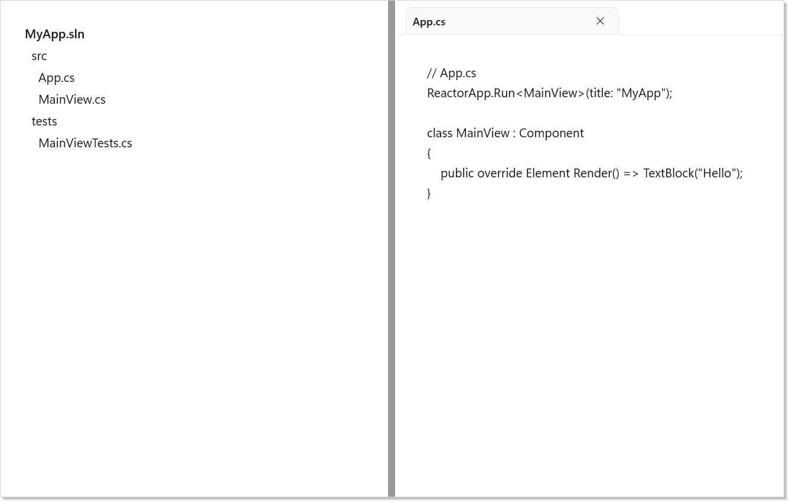
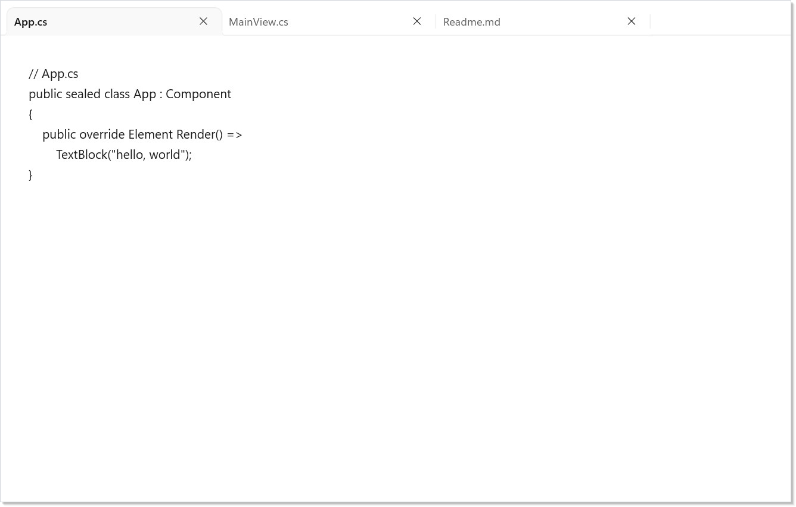
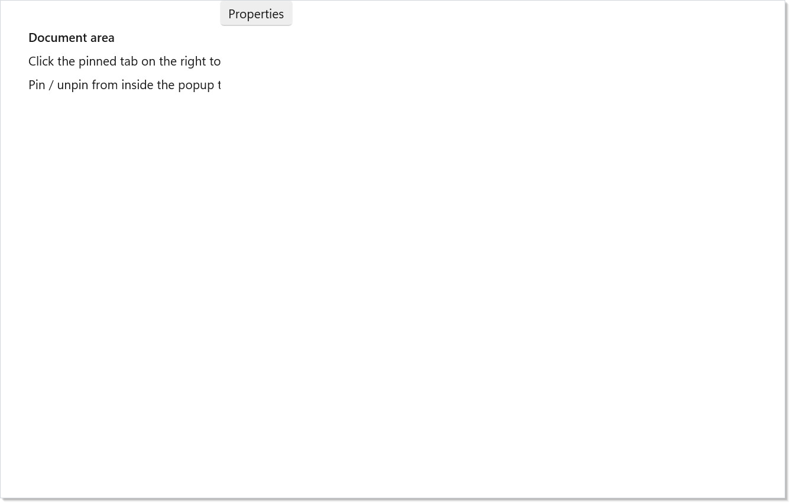
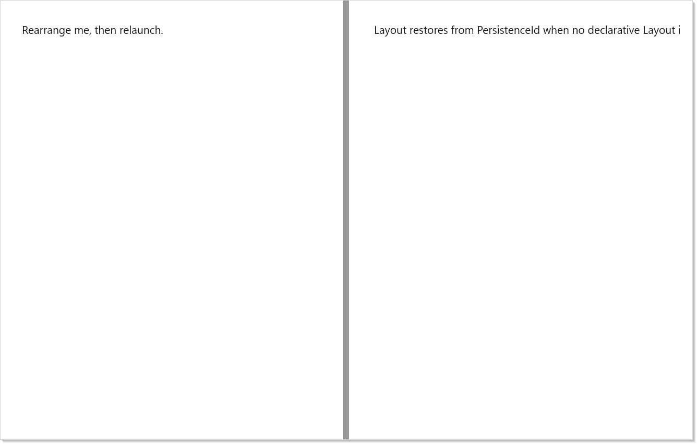

Docking Windows¶
Microsoft.UI.Reactor's docking system lets a single shell host multiple user-rearrangeable surfaces — the Visual Studio / VS Code / Photoshop / Figma layout idiom. Users drag tabs between groups, split panes, pin tool windows to a side, and tear panes out into floating sub-windows; layouts persist across sessions.
The element is DockManager. Its Layout is an immutable DockNode
tree describing the desired arrangement; the reconciler turns that
tree into native WinUI controls and applies the minimum mutations on
every re-render.
Minimal Setup¶
Docking ships in the optional Microsoft.UI.Reactor.Advanced package
(spec 062 §7). Add its package reference:
Docking is an opt-in element type — register it at host construction
time, then use DockManager like any other Reactor element:
ReactorApp.Run<DockingApp>(
title: "Docking",
width: 900,
height: 600,
configure: host => DockingNativeInterop.Register(host.Reconciler));
DockingNativeInterop.Register wires the DockManager, splitter, and
drop-target elements into the reconciler. Without it, a DockManager
in your tree will not be recognized.
A two-pane horizontal split:
class TwoPaneDemo : Component
{
public override Element Render() => new DockManager
{
Layout = new DockSplit(
Orientation.Horizontal,
new DockNode[]
{
new ToolWindow
{
Title = "Solution Explorer",
Key = "tool:solution",
Width = 260,
Content = VStack(6,
TextBlock("MyApp.sln").SemiBold(),
TextBlock(" src"),
TextBlock(" App.cs"),
TextBlock(" MainView.cs"),
TextBlock(" tests"),
TextBlock(" MainViewTests.cs")
).Padding(12)
},
new DockTabGroup(
Documents: new DockableContent[]
{
new Document
{
Title = "App.cs",
Key = "doc:app-cs",
Content = VStack(4,
TextBlock("// App.cs"),
TextBlock("ReactorApp.Run<MainView>(title: \"MyApp\");"),
TextBlock(""),
TextBlock("class MainView : Component"),
TextBlock("{"),
TextBlock(" public override Element Render() => TextBlock(\"Hello\");"),
TextBlock("}")
).Padding(16)
}
},
SelectedIndex: 0),
}),
};
}

The leaves of the tree are pane records. Prefer Document for closable
editor-like panes and ToolWindow for hideable, side-pinnable tools; both
derive from the source-compatible DockableContent base. Each pane carries
a Title (shown on the tab / floating window), an optional Content
element subtree, and — importantly — a stable Key.
Key is required for any pane whose state should survive
reorderings, tab moves, and tear-outs. Reactor's keyed reconciler
matches panes by Key and preserves the element subtree (and its
UseState slots) across tree rebuilds. There is no implicit
Title-as-key fallback; always supply one.
The DockNode algebra has three core node families (all immutable
records), plus the document/tool leaf specializations:
| Type | Purpose |
|---|---|
DockSplit(Orientation, Children, …) |
Splits children along one axis, with drag-resize splitters between them |
DockTabGroup(Documents, TabPosition, CompactTabs, …) |
Presents children as tabs |
Document |
Closable leaf pane for editor/document surfaces; cannot pin by default |
ToolWindow |
Hideable leaf pane for tool surfaces; can auto-hide/pin by default |
DockableContent |
Base leaf pane kept for older positional-constructor code |
DockManager itself accepts these props:
| Prop | Purpose |
|---|---|
Layout |
Root of the DockNode tree |
LeftSide / TopSide / RightSide / BottomSide |
Pinned tool windows along an edge |
ActiveDocument |
Resolves by Key against Layout; mismatched keys leave activation alone |
Adapter |
IDockAdapter for rehydration and floating chrome |
PersistenceId |
Routes layout JSON through WindowPersistedScope |
LayoutStrategy |
Routes programmatic document/tool inserts before default placement |
OnLayoutChanging / OnLayoutChanged and pane lifecycle events |
Observe or cancel layout, close, hide, float, and dock transitions |
ShowDropTargets |
Shows the drop-target overlay for drag, keyboard, or test-driven moves |
SplitRatios / OperationLog |
Optional diagnostics and externally-owned split sizing |
Tab Groups¶
DockTabGroup holds N DockableContent leaves and presents them as
tabs. Users reorder by drag; SelectedIndex reports the active tab:
class TabGroupDemo : Component
{
public override Element Render() => new DockManager
{
Layout = new DockTabGroup(
Documents: new[]
{
new Document
{
Title = "App.cs",
Key = "doc:app",
Content = VStack(4,
TextBlock("// App.cs"),
TextBlock("public sealed class App : Component"),
TextBlock("{"),
TextBlock(" public override Element Render() =>"),
TextBlock(" TextBlock(\"hello, world\");"),
TextBlock("}")
).Padding(16)
},
new Document
{
Title = "MainView.cs",
Key = "doc:main",
Content = TextBlock("// MainView.cs body").Padding(16)
},
new Document
{
Title = "Readme.md",
Key = "doc:readme",
Content = TextBlock("# Readme").Padding(16)
},
},
SelectedIndex: 0),
};
}

TabPosition.Bottom combined with CompactTabs: true produces
Office's tool-pane shape. Document panes are closeable by default; a
closed document raises the document lifecycle callbacks and is removed
from the native layout.
Shaping a Document Well¶
Set Role on a DockTabGroup to declare the IDE-class document-vs-tool
distinction. Three values:
DockGroupRole.General— the default; accepts every category and culls when emptied. Pre-spec-046 behavior.DockGroupRole.DocumentArea— the document well. Preferred target forDock(Center)onDocumentpanes; rejectsToolWindowdrops by default. Survives empty (no per-groupShowWhenEmptyneeded) so the well stays a visible drop target after the last document closes.DockGroupRole.ToolWindowStrip— an edge strip of tool windows. Preferred target forToolWindowpanes; rejectsDocumentdrops.
A Visual-Studio-shaped layout: tool strip on the left, document well in
the middle, tool strip on the right. model.Dock(doc, DockTarget.Center)
lands in the middle group regardless of where it sits in tree order:
var galleryItemsToolWindow = new ToolWindow { Title = "Gallery", Key = "tool:gallery" };
var configurationToolWindow = new ToolWindow { Title = "Configuration", Key = "tool:configuration" };
return new DockSplit(Orientation.Horizontal, new DockNode[]
{
new DockTabGroup(
new[] { galleryItemsToolWindow },
Width: 260,
Role: DockGroupRole.ToolWindowStrip),
new DockTabGroup(
Array.Empty<DockableContent>(),
Role: DockGroupRole.DocumentArea),
new DockTabGroup(
new[] { configurationToolWindow },
Width: 320,
Role: DockGroupRole.ToolWindowStrip),
});
Programmatic
Dock(content, DockTarget.Center)routes to the firstDockGroupRole.DocumentAreagroup, falling back to the first compatible group (and logging a diagnostic if none accepts the payload). To target a specific group regardless of role, use theDock(content, DockTabGroup, DockTarget)overload — the explicit placement is trusted and skips the role compatibility check.
When the user splits a Document inside a DocumentArea via drag, the
new sibling group inherits the role — splitting a doc well produces two
doc wells, not one well plus a General group. The same propagation
fires for ToolWindowStrip when the user drops a tool on the layout's
edge: DockBottom with a ToolWindow payload creates a new
ToolWindowStrip-roled group at the bottom, even when no strip existed
before.
Constraining Tool Window Placement¶
ToolWindow.AllowedSides is a [Flags] mask that limits which edges a
tool window may dock to (Qt's setAllowedAreas shape). Default
DockSides.All preserves unconstrained placement. Set it to
DockSides.Bottom to lock an Errors pane to the bottom strip:
var errors = new ToolWindow
{
Title = "Errors",
Key = "tool:errors",
AllowedSides = DockSides.Bottom,
};
Effect:
- The drop-target overlay dims edges the mask excludes during drag, and the hit-test ignores those targets — releasing over a forbidden edge snaps the pane back.
model.PinToSide(tw, DockSide.Left)throwsInvalidOperationExceptionwhenLeftisn't in the mask. Strategies that need to bypass should clone viatw with { AllowedSides = DockSides.All }before calling.DockSides.Noneis allowed and means the tool window is float-only — everyPinToSidethrows and every dock-edge target dims during drag.
Side Pins (Auto-Hide)¶
LeftSide, TopSide, RightSide, and BottomSide on DockManager
carry pinned tool windows. Each collapses to an edge icon; clicking
the icon expands a popup, clicking out collapses it back:
class SidePinDemo : Component
{
public override Element Render() => new DockManager
{
Layout = new Document
{
Title = "Document",
Key = "doc:main",
Content = VStack(8,
TextBlock("Document area").SemiBold(),
TextBlock("Click the pinned tab on the right to expand it."),
TextBlock("Pin / unpin from inside the popup to toggle.")
).Padding(16)
},
RightSide = new[]
{
new ToolWindow
{
Title = "Properties",
Key = "tool:properties",
Content = VStack(4,
TextBlock("Name").SemiBold(),
TextBlock("Width: 240"),
TextBlock("Height: 120")
).Padding(12)
},
},
};
}

Use ToolWindow for side-pin content. It enables pin and auto-hide
affordances by default, so users can pin and unpin at runtime, and the
moved-to-side state round-trips through persistence.
Persistence¶
Set PersistenceId to enable automatic save/restore. Reactor routes
the layout JSON through WindowPersistedScope["docking:<id>"] so the
arrangement survives app restarts:
class PersistenceDemo : Component
{
public override Element Render() => new DockManager
{
// Layout JSON is auto-saved to WindowPersistedScope["docking:my-shell"].
// It is the restore fallback when a later mount leaves Layout null.
PersistenceId = "my-shell",
Layout = new DockSplit(
Orientation.Horizontal,
new DockNode[]
{
new ToolWindow
{
Title = "Outline",
Key = "tool:outline",
Width = 240,
Content = TextBlock("Rearrange me, then relaunch.").Padding(12)
},
new Document
{
Title = "Editor",
Key = "doc:editor",
Content = TextBlock("Layout restores from PersistenceId when no declarative Layout is supplied.").Padding(12)
},
}),
};
}

The declarative Layout remains the source of truth while you provide
one. Persisted JSON is used as the restore fallback when a later mount
sets the same PersistenceId and leaves Layout null. Re-render with a
different PersistenceId to start fresh.
Floating Tear-Outs¶
When a user drags a tab title into open space, a floating window
appears at the pointer with a custom title bar supplied by an
IDockAdapter:
class FloatingChromeAdapter : IDockAdapter
{
public Element? OnContentCreated(DockableContent content) => null;
public void OnGroupCreated(DockTabGroupContext group) { }
// Custom title bar painted on torn-out floating windows.
public Element? GetFloatingWindowTitleBar(DockableContent? source) =>
HStack(8,
TextBlock("📌").Opacity(0.7),
TextBlock(source?.Title ?? "Floating").SemiBold(),
TextBlock(" — My App").Opacity(0.5)
).Padding(12, 6, 12, 6);
}
Pass the adapter on DockManager.Adapter. OnContentCreated is called
when a pane is rehydrated from persisted JSON — return the Reactor
subtree to mount inside it, keyed off content.Key. For observation and
cancellation, prefer the per-event DockManager callbacks such as
OnContentFloating, OnContentDocking, OnDocumentClosing, and
OnLayoutChanged; the older behavior interface is obsolete.
Pane Hooks¶
Pane content can read docking context through hooks:
| Hook | Use |
|---|---|
ctx.UsePane() |
Stable pane identity (Key, title, role) for the current subtree |
ctx.UseDockState() |
Current pane state: docked, floating, auto-hidden, expanded, or hidden |
ctx.UseIsActivePane() |
True only for the active pane |
ctx.UseDockPanePersisted(key, initial) |
Window-scoped persisted state automatically prefixed by pane key |
Use ctx.UseDockLayout() sparingly — it re-renders on any structural
layout change and is intended for devtools and diagnostics, not ordinary
pane bodies.
Tips¶
Always set Key on panes with stateful content. A controlled
TextBox inside a pane without a Key will lose its draft text the
moment a user drags the tab — the reconciler can't tell it's the
"same" pane, so it remounts the subtree. Keys can be strings, GUIDs,
enums, or any equatable domain identifier.
Build the tree from data, not branches. Mapping a
List<DocumentVm> through .Select(d => new DockableContent(…)) is
the idiomatic way to drive open documents. There is no
DocumentsSource binding API; the closure does the work.
Register once per host. DockingNativeInterop.Register is
idempotent, but the natural place to call it is the configure:
callback on ReactorApp.Run. Apps that open secondary windows via
ReactorApp.OpenWindow should register on each new ReactorHost.
Layouts are immutable records — produce a new tree. Like any
Reactor element, mutate by re-rendering with a new DockManager.
Keyed reconciliation handles the diff; you don't manage the underlying
control yourself.
Next Steps¶
- Windows — top-level window lifecycle, the host surface that docking lives inside.
- Persistence —
UsePersisted, scopes, and theWindowPersistedScopethat docking layouts route through. - Components —
Keyrules and the reconciler identity model thatDockableContent.Keyplugs into. - Reactor — back to the docset index.